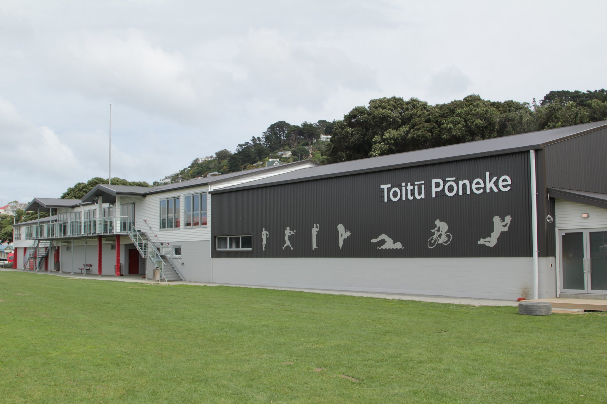

Wellington · The flagship
One morning.
Many ways
to move.
The Move to Improve flagship brings the Wellington community together at Toitū Pōneke for our biggest event of the month.
Check-in opens at 4:30am. The run starts at 5:00am, with a final movement celebration from noon–1:00pm.

One loop.
Or all seven.
At the centre of the morning is a backyard ultra-inspired run and walk. A new 6.7km loop starts from Toitū Pōneke every hour from 5:00am through to 11:00am, with the final loop returning by noon.
Complete one loop, a few, or all seven for 46.9km. Stay for the final movement celebration from noon–1:00pm.
Do one loop. Do a few. Take on all seven. Walk. Run. Stop when you’re ready.
- Loop 01
- Loop 02
- Loop 03
- Loop 04
- Loop 05
- Loop 06
- Loop 07
More ways to
take part.
Alongside the loops, there will be other ways to participate throughout the morning. Movement session times and recovery hours will be announced once finalised.
-

Run + walk
One 6.7km loop or all seven for 46.9km. The challenge is yours to choose.
-

Functional movement
Strength and functional training, with ways to move beyond the run.
-
Boxing
Join for a boxing session and another way to take part.
-

Pilates + yoga
Planned lower-impact movement, mobility, breathwork and a chance to reset. Instructors and sessions are still to be confirmed.
-

Recovery hub
O-Studio joins us with Normatec equipment and a portable ice bath. Recovery Hub hours and access details will be announced soon.
-

Community + partner village
Community, useful resources, partner experiences and space to stay, support others and connect. Coffee arrangements and the full partner line-up will be announced soon.
Show up your way.
Every movement counts.
You don’t have to complete seven loops for your contribution to matter.
Come for an hour or spend the morning with us. Move, volunteer, cheer, recover, fundraise or simply be part of the community.
Route and registration details will be announced soon.
Explore all events